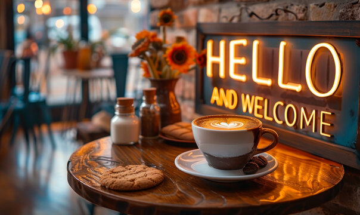

|  |
About Our CafeWelcome to My Cafe, where we serve more than just coffee—we serve an experience! Located in the heart of the city, our cozy atmosphere and friendly staff make it the perfect spot to relax, catch up with friends, or focus on work. Whether you're looking for a morning pick-me-up or a place to unwind after a busy day, we have everything you need. Our CoffeeAt My Cafe, we take pride in our coffee. Each cup is made with the finest, freshly ground beans sourced from local and international farmers. From rich, bold espresso to creamy lattes and frothy cappuccinos, we offer a variety of coffee drinks to suit every taste. Whether you prefer your coffee black or with a splash of milk, our expert baristas are here to create the perfect drink for you. |